Under double-anonymous review · IEEE ICRA 2027 submission
All cameras of a stationary vehicle are calibrated using environmental markers placed around it — no overlapping fields of view, no vehicle motion, no pairwise pre-calibration, no surveying equipment.
Weighting
Every observation carries its own 6×6 information matrix
Corner uncertainty of a single image becomes a marker-pose covariance, and its inverse becomes that factor's weight.
Structure
The environmental marker map is built once and reused as a joint prior
One auxiliary camera maps the markers; marginalizing its poses leaves a prior that keeps cross-marker correlations.
Output
Extrinsics in a wheel-defined vehicle frame
Four wheel markers define the ISO 8855 vehicle frame, so the result is a physical
base_link→camera transform.
Two stages: map the environment once, then calibrate each vehicle against that map.
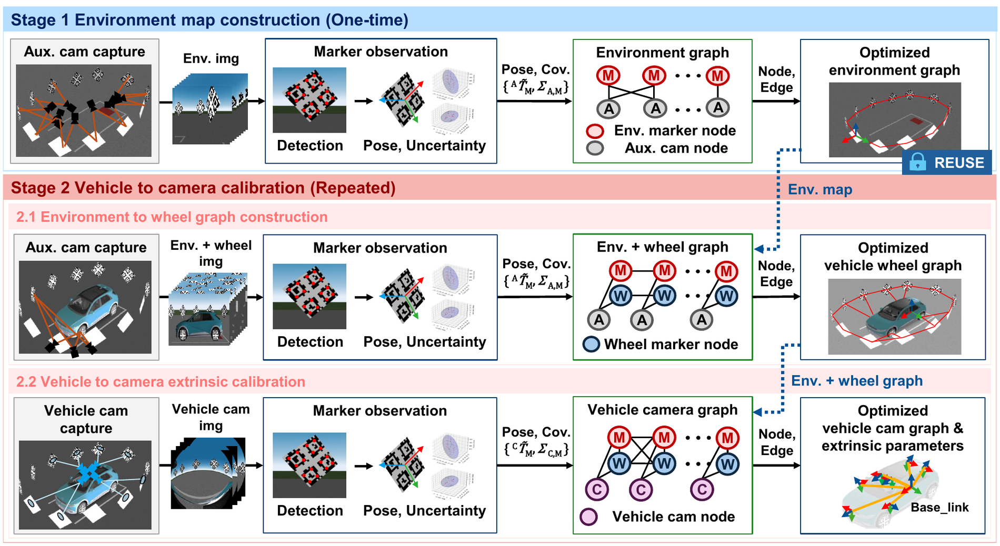
1Weight each observation
Corner-detection uncertainty is propagated through an unscented transform and PnP into a 6×6 marker-pose covariance, so each factor's weight reflects how reliable that image is.
2Map the environment once
A single auxiliary camera is carried around the environmental markers. The reference marker fixes the world frame, and one pose node is created per image.
3Compress and reuse
The auxiliary-camera poses are marginalized away, leaving a dense prior that keeps the correlations between markers. Later runs reuse this prior instead of the original images, and the markers stay adjustable.
4Read out the extrinsics
Wheel markers and vehicle cameras reach the common frame through separate observation paths, so no
camera pair has to see the same marker. The four wheel markers define base_link.
Corners and their covariances give the measured pose and the information matrix of that camera–marker factor, using the pinhole or Kannala–Brandt projection model for each image.
Each stage minimizes the weighted residual sum, so a more uncertain observation moves the solution less.
Marginalizing the Stage 1 camera blocks A out of the linearized normal equations leaves a dense Gaussian prior over the marker blocks e.
Stage 2 estimates environmental markers, wheel markers, new auxiliary-camera poses, and vehicle cameras together. Under a quadratic approximation this equals marginalizing the Stage 1 camera poses out of one joint optimization.
The vehicle frame B comes from the four wheel-marker centers: origin at the rear midpoint, +x toward the front midpoint, +z up (ISO 8855:2011). No extra optimization variable is needed.
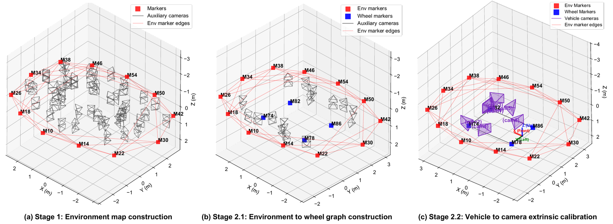
Three camera rigs reproduced in CarMaker, plus a real IONIQ vehicle at five stationary poses.
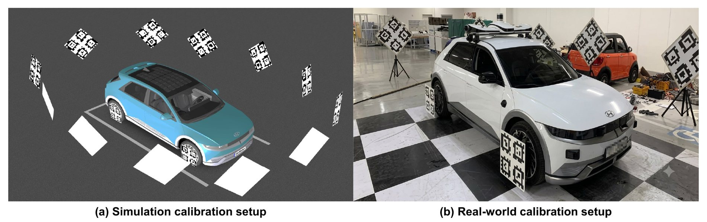
tagStandard41h12| Rig | Cameras | Projection models | Role |
|---|---|---|---|
| nuPlan (sim.) | 8 | pinhole, HFoV ≈ 63.7° | absolute GT accuracy |
| PAI (sim.) | 7 | 3 fisheye (≈ 119°), 4 pinhole | absolute GT accuracy |
| IONIQ (sim.) | 10 | 8 fisheye, 2 pinhole | absolute GT accuracy, timing |
| IONIQ (real) | 10 mounted, 8 evaluated | 4 pinhole, 4 Kannala–Brandt fisheye | reprojection, dispersion, timing |
CarMaker reproduces only the vehicle dimensions and the camera counts, mounting poses, and fields of view of each rig; the original nuPlan and PAI images are not used. Every simulated rig contains camera pairs with no common marker observation.
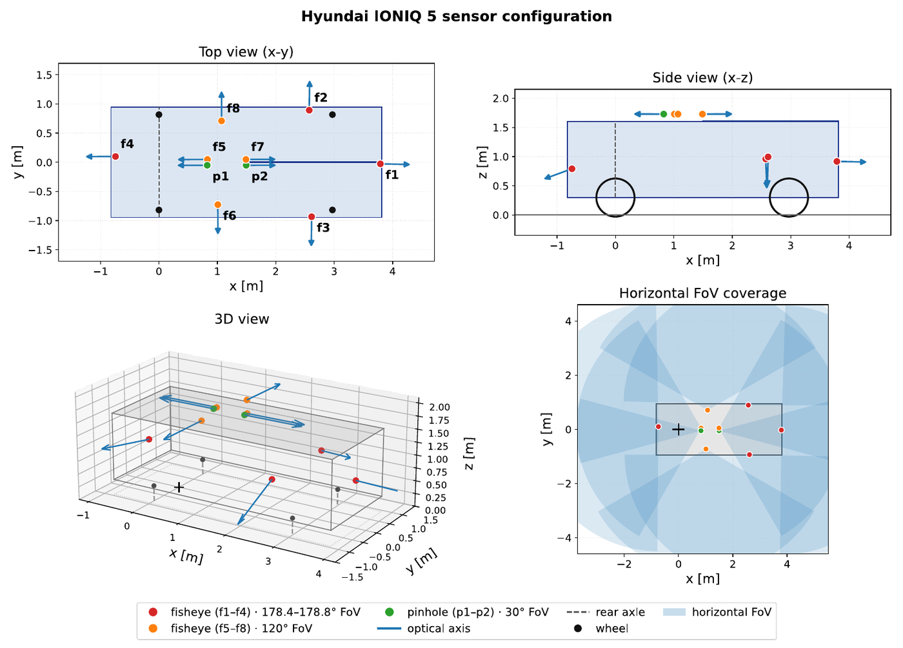
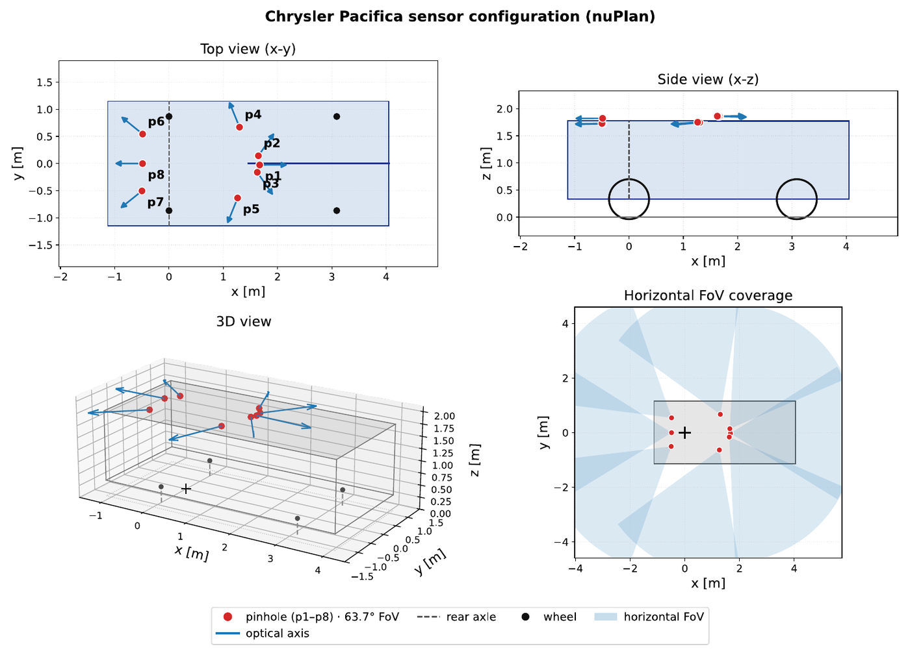
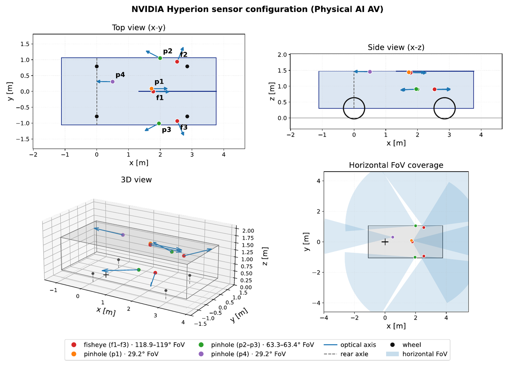
Fig. 4. Mounting poses and horizontal field-of-view coverage of the three rigs (click to enlarge). The white wedges are directions where no camera pair overlaps.
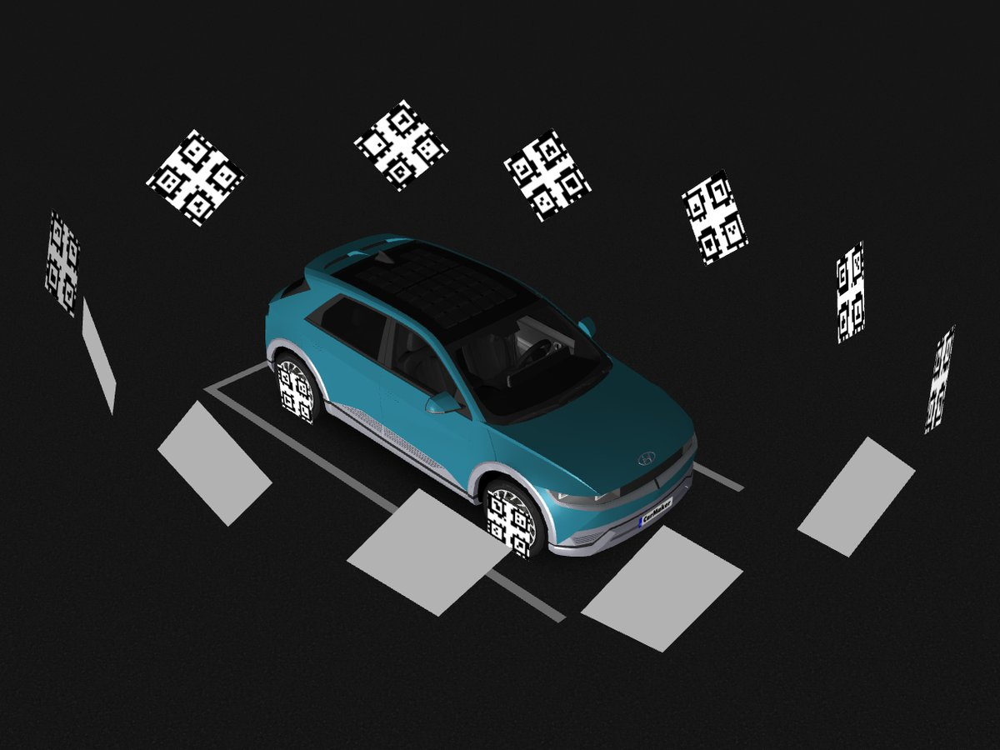
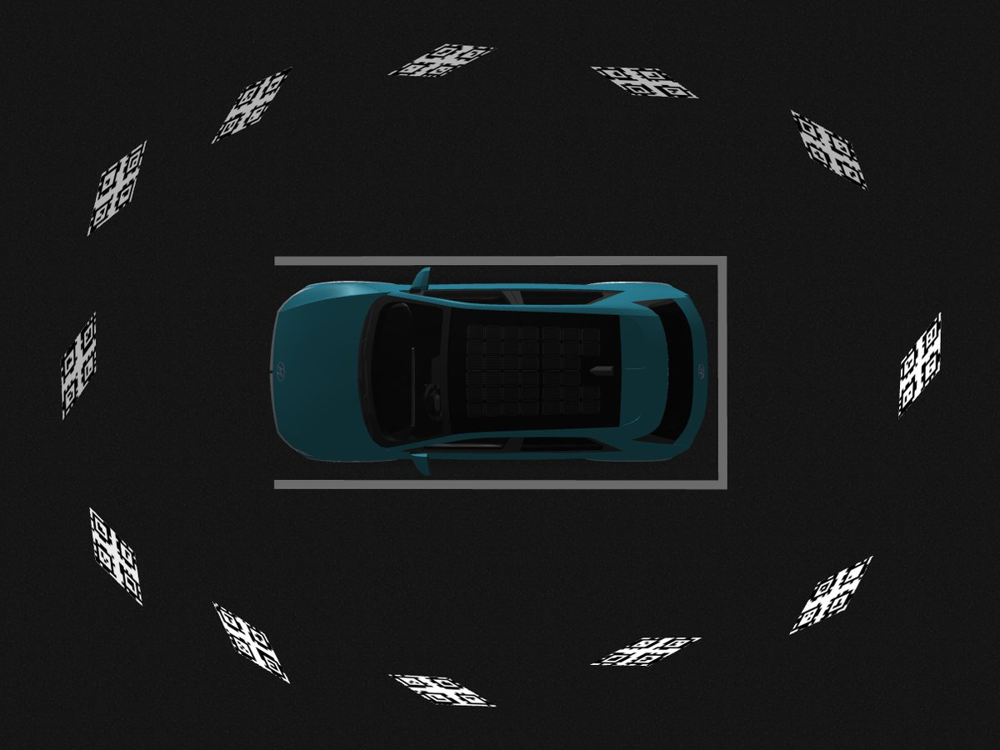
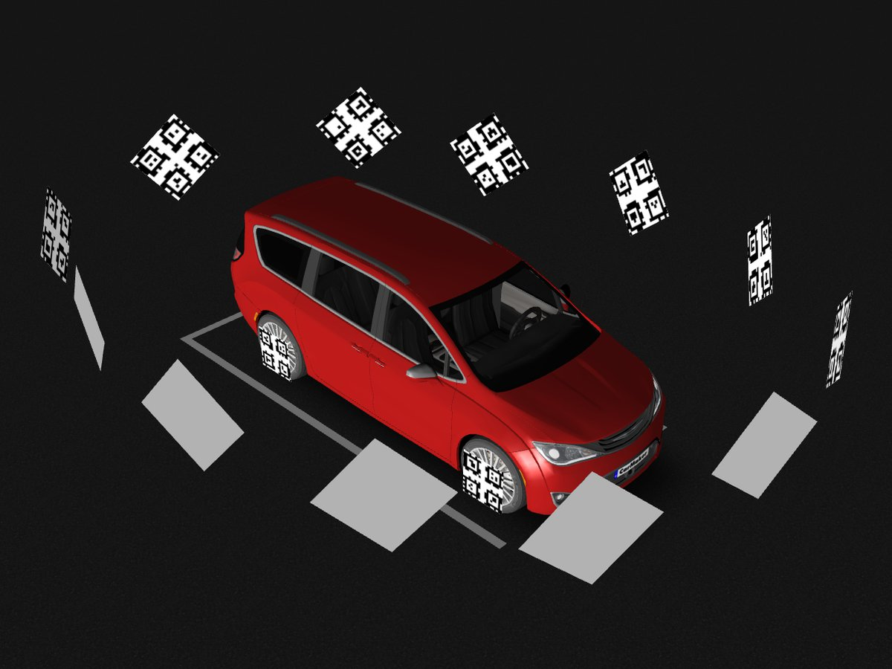
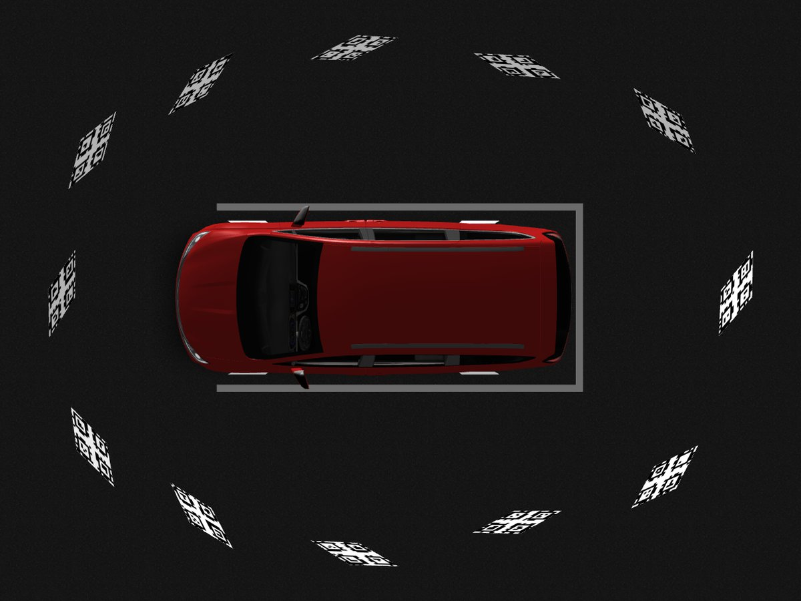
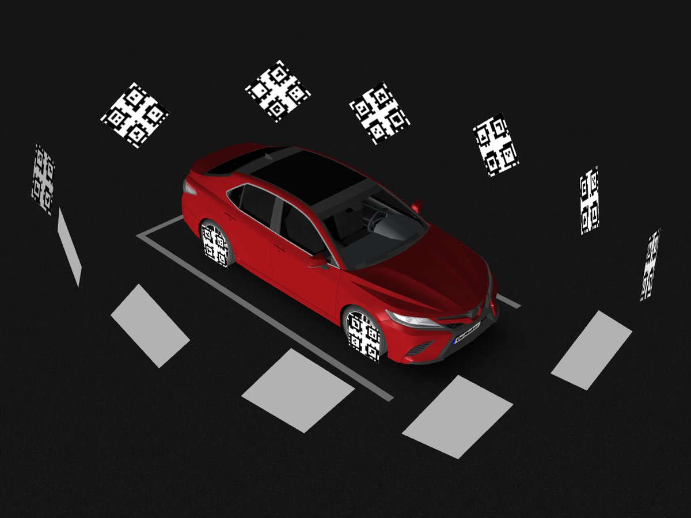
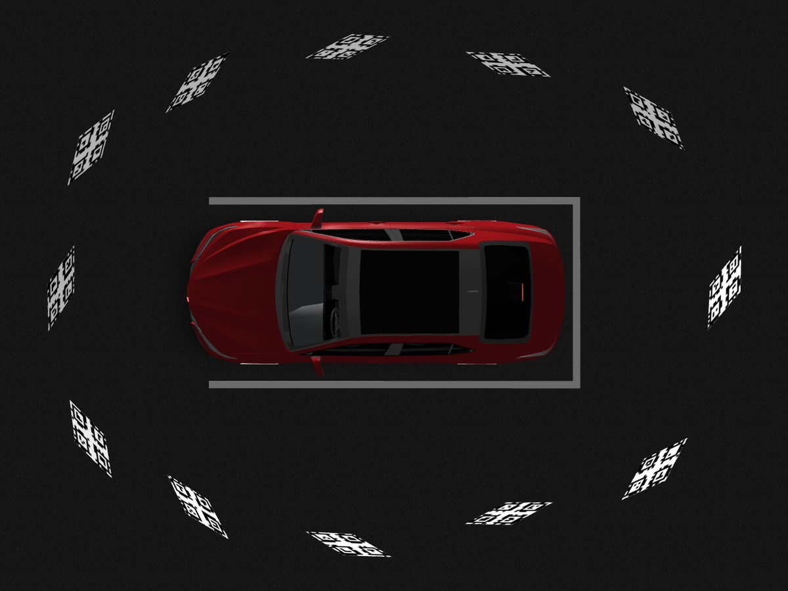
Fig. 5. The same marker arrangement in CarMaker for each rig; what changes is the vehicle body, the camera rig, and the board heights, which scale with the vehicle's height.
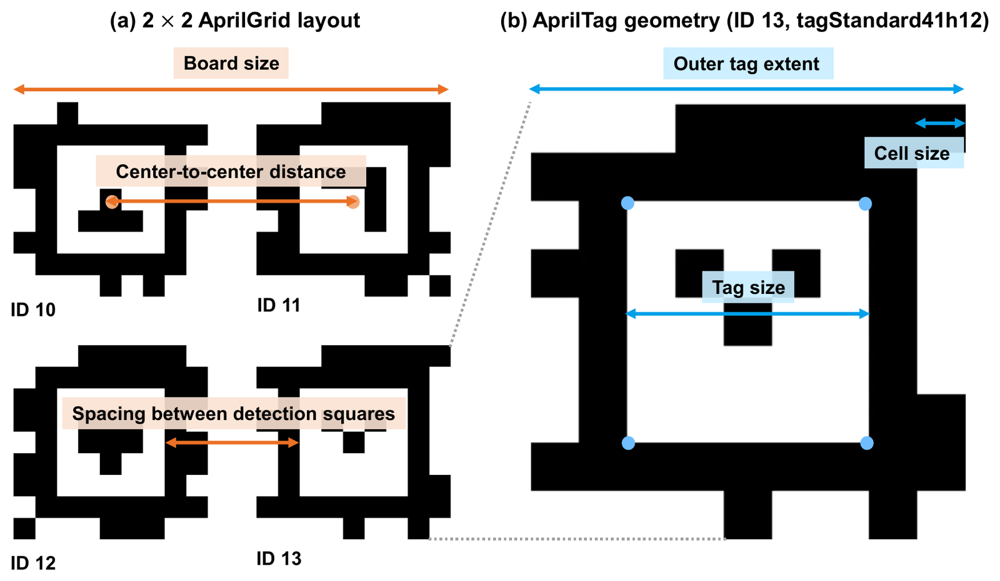
tagStandard41h12 AprilGrid, which give the known 3-D corner coordinates.| Method | Description |
|---|---|
| Ours | inverse of the single-image marker-pose covariance, per observation |
| Geom-σ | scalar weight from projected edge lengths, orthogonality and distance from the principal point |
| Fixed-σ | the same identity information matrix for every observation |
| Chain | structural baseline: composes relative poses along a single chain instead of solving one joint graph |
| Full joint | timing baseline: everything optimized in one run, with no precomputed prior |
The three weightings are a controlled ablation: same observations, graph, initialization, optimizer, and noise realization — only the information matrices differ.
Rotation RMSE [deg] / translation RMSE [mm] of the vehicle-frame extrinsics / reprojection RMSE [px]. Bold is best, underline second.
| Rig | Noise (env. / wheel, vehicle) | Ours | Geom-σ | Fixed-σ |
|---|---|---|---|---|
| nuPlan | none / none | 0.017 / 1.343 / 0.0399 | 0.079 / 3.073 / 0.1241 | 0.101 / 3.490 / 0.1365 |
| nuPlan | none / 1 px | 0.673 / 41.008 / 1.8295 | 1.846 / 91.550 / 5.2363 | 2.389 / 127.178 / 6.4214 |
| nuPlan | 1 px / 1 px | 0.613 / 38.286 / 1.7588 | 1.849 / 107.212 / 8.4029 | 2.166 / 132.220 / 9.0703 |
| PAI | none / none | 0.019 / 1.512 / 0.1337 | 0.070 / 3.768 / 0.3496 | 0.076 / 4.038 / 0.3024 |
| PAI | none / 1 px | 0.518 / 25.979 / 1.2495 | 2.358 / 137.768 / 5.4391 | 1.989 / 147.933 / 6.0149 |
| PAI | 1 px / 1 px | 0.449 / 27.079 / 1.2917 | 2.478 / 132.272 / 5.4777 | 2.157 / 141.676 / 5.7237 |
| IONIQ | none / none | 0.032 / 1.502 / 0.1539 | 0.075 / 4.453 / 0.3372 | 0.071 / 5.112 / 0.3637 |
| IONIQ | none / 1 px | 0.549 / 38.241 / 1.3185 | 1.938 / 124.200 / 5.6532 | 3.356 / 215.497 / 7.7577 |
| IONIQ | 1 px / 1 px | 0.779 / 50.035 / 1.3710 | 1.786 / 112.082 / 6.3657 | 3.112 / 200.614 / 7.5469 |
Best in all nine conditions and all three metrics.
| Rig | Ours — R / T | Chain — R / T |
|---|---|---|
| nuPlan | 0.613 / 38.286 | 6.627 / 264.728 |
| PAI | 0.449 / 27.079 | 4.960 / 199.033 |
| IONIQ | 0.779 / 50.035 | 2.031 / 76.557 |
Chain composes the relative poses along a single chain instead of solving one joint graph. Both run on the same data and noise realization, so this compares graph structure, not weighting.
| Rig | No noise — R / T | Env. corner 1 px — R / T |
|---|---|---|
| nuPlan | 0.007 / 0.390 | 0.210 / 10.293 |
| PAI | 0.006 / 0.398 | 0.187 / 7.790 |
| IONIQ | 0.003 / 0.219 | 0.252 / 13.295 |
Marker ground truth exists only in simulation, so the map is checked there: at 1 px corner noise it stays within 0.19–0.25° and 7.8–13.3 mm, which is close enough to serve as the linearization point of the Stage 2 prior.
| Condition | Full joint [s] | Reusing the prior [s] | Reduction |
|---|---|---|---|
| IONIQ (simulation) | 7.311 | 2.822 | 61.4% |
| IONIQ (real) | 15.541 | 5.720 | 63.2% |
Optimization time only, not data acquisition. The real Stage 2 graph holds 64 pose nodes, versus 160 in full joint optimization.
Eight cameras, five stationary poses, no absolute ground truth — these numbers measure repeatability, not accuracy.
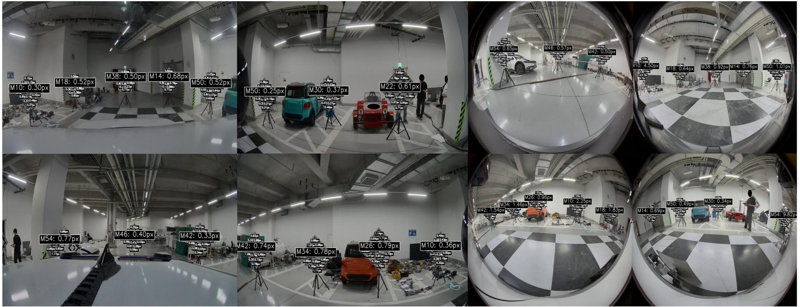
| Pose | Ours | Geom-σ | Fixed-σ |
|---|---|---|---|
| Pose 1 | 0.832 / 0.455 | 1.693 / 0.923 | 1.344 / 0.657 |
| Pose 2 | 0.611 / 0.299 | 1.323 / 0.702 | 1.433 / 0.870 |
| Pose 3 | 0.645 / 0.366 | 1.395 / 0.774 | 1.188 / 0.641 |
| Pose 4 | 0.657 / 0.354 | 1.445 / 0.872 | 1.173 / 0.677 |
| Pose 5 | 0.860 / 0.501 | 1.564 / 0.904 | 1.256 / 0.703 |
| Median cross-pose RMSE | 1.35 | 2.11 | 2.02 |
The cross-pose score fixes the extrinsics from one pose, re-fits only the rigid vehicle transform at each other pose, and takes the median over the 20 ordered pairs.
| Method | Cam-to-cam [mm] | Cam-to-cam [°] | Vehicle-to-cam [mm] | Vehicle-to-cam [°] |
|---|---|---|---|---|
| Ours | 21.0 | 0.265 | 17.8 | 0.323 |
| Geom-σ | 22.3 | 0.308 | 18.9 | 0.469 |
| Fixed-σ | 22.9 | 0.317 | 19.1 | 0.446 |
Averaged over 28 camera pairs and eight cameras. The vehicle-to-camera figures also absorb the cross-pose variation of the wheel-defined frame itself.
The CarMaker simulation data behind the results above will be released alongside the code.
It will include, for all three rigs (nuPlan, PAI, IONIQ), the environment, wheel, and vehicle-camera images with their AprilTag detections, the ground-truth marker and extrinsic poses, and the three noise conditions used in the ablation. A download link will be added here once it is public.
Full details are in the paper. The code is available at github.com/hfgo-hfgo/hfgo.
@misc{anonymous2027hfgo,
title = {Uncertainty-Aware Hierarchical Factor Graph Optimization for
Multi-Camera Extrinsic Calibration of Autonomous Vehicles},
author = {Anonymous},
note = {Under review at IEEE ICRA 2027},
year = {2026}
}